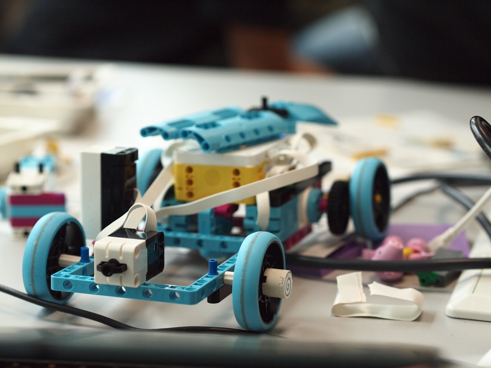

Team arbeid i Teambasert Samhandling
I dette faget har vi lært å jobbe i team ved å jobbe i gruppen med flere prosjekter over tid. Dette har gjort at gruppen kan utvikle seg og vi kan se hvordan tilitt og samhold bygger seg opp.
Oppgaven og mitt bidrag
Vi har fått i oppgave å lage kode for en legobil i SPIKE. Bilen skal gjøre instruksjoner som følge en linje, gjøre triks eller kjøre i en firkant. Jeg har bidratt mye til å skrive kode der jeg har noe erfaring fra Matematikk for Programmering der vi kodet kuler i bevegelser i et 3D vektorrom.
I gruppen har vi god og rettferdig arbeidsfordeling, jeg fokuserer mye på å lese dokumentasjon og bøker i pensum for å sette inn godt dokumenterte løsninger. Mitt bidrag går også i å rydde i fungerende kode og finne løsninger som å bevege bilen med funksjonen move.tank.
Oppgaven og mitt bidrag
I arbeidslivet vil disse gruppene og kunnskap om samarbeid i team være nyttig for å lett integrere meg i arbeidslivet. Lysten og viligheten min til å dokumentere og ønske å gjøre en god teknisk jobb vil komme til gode. Vi har lært om mange gode kilder for læring.